準備
基盤を監査する
資本を投下する前に、プロトコル、インフラ、流動性の経路、統合の準備状況を精査します。

CARDANO PRIMEPRIMEは、Cardanoの技術的な強みを、より厚い流動性、有用な統合、そして持続的なオンチェーン成長へと 転換するための、コミュニティが監督する12か月間のプログラムです。
参加者の顔ぶれ
現在の参加者リストに挙げられているDeFi、インフラ、ディストリビューションの各プロトコルです。カウントは下記の リストから生成されるため、このページは連合の拡大とともに成長します。
ロゴの掲載は参加しているエコシステムを示すものであり、それ自体が提案への正式な支持を意味するものではありません。
ALPHAGROWTHの提案状況
PRIMEは技術的なデューデリジェンスを前倒しで行い、資金の大部分を公開のリリースゲートの後ろに留め、その成果を オンチェーンで測定します。未使用・未獲得・未リリースの資金は、定義された6つのトリガーに基づいてCardanoトレジャリーへ返還されます。
準備
資本を投下する前に、プロトコル、インフラ、流動性の経路、統合の準備状況を精査します。
設計
監査の結果を、公開の提言、パートナー計画、そして責任者が明確な展開ロードマップへと落とし込みます。
実行
ゲートされた資本は第4か月の判断を経てはじめて放出し、その後、実行の経済性を検証済みの成長に連動させます。
パブリックの声
ここに掲載しているのは、提出された支持の付録に含まれる公開の投稿のみです。
Cardanoは大胆で協調的な計画により、DeFiインフラのギャップに対処し、新規で定着性の高い流動性をめぐって競争できる。
投稿を見る ↗ @realdecimalist · FLUX POINT「大きな要求だが、まさに必要なものだ。」
投稿を見る ↗ @CashAnvil · ANVIL「彼らは本物だ」。そしてCardanoを、これまで届かなかった場所へと押し上げる力になり得る。
投稿を見る ↗ @phil_uplc · ANASTASIA「AlphaGrowthはホームランバッターだ。」
投稿を見る ↗ @IOGroupPRIMEは、Compound、Uniswap、Arbitrumでの経験に裏打ちされた12か月間のプレイブックをもたらす。
投稿を見る ↗ @liqwidfinancePRIMEは、CardanoのDeFiを加速させる実証済みの手法をめぐる、重要なガバナンス上の議論を生み出す。
投稿を見る ↗ @realfi_co「流動性、より深いDeFiの活用、そして持続可能なオンチェーン成長に焦点を当てた、協調的な12か月間の取り組み。」
投稿を見る ↗ @MicheleHarmonic · GRAVITYAlphaGrowthは分散型DeFiを理解しており、トレジャリーの流動性をユーザーと流動性プロバイダーのためにどう配分できるかを心得ている。
投稿を見る ↗オンチェーンで検証済み
現在の投票力の順に並べ、カラーの階層と、出典が検証された公開プロフィール画像を添えています。一致する情報がないアイデンティティには、未検証の写真ではなく中立的なモノグラムを使用します。
その検索に一致する検証済みの賛成投票者はいません。
決定は今、進行中